優先順位の #1・#2・#3の一部・#11 を実装し、390×844で実測して確認しました。ゲームの計算・保存形式は変えていません（見た目と手数だけ）。未コミット。
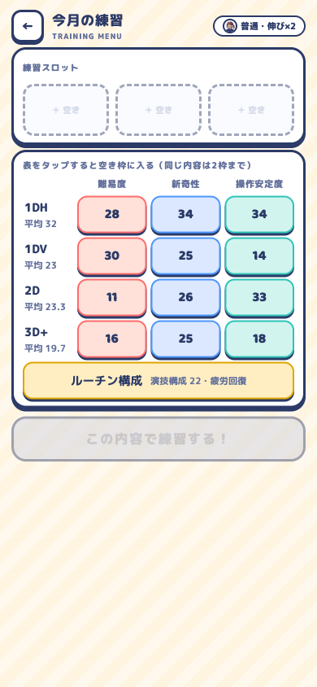
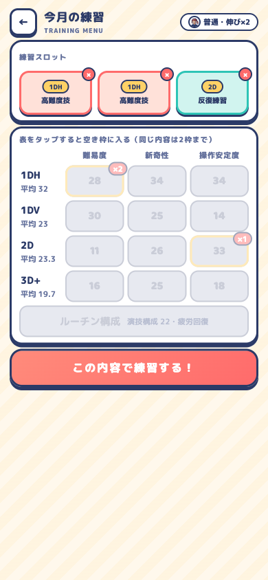
4ジャンル×3内容の12マス＋ルーチン行。マス86×46px、値16.8px。3枠＝3タップ（改修前6タップ）。同じマスは「×2」で止まり、3枠埋まると全マス無効。画面はスクロール無し（GO下端567px）。
「🔁 前回と同じ」: 1回練習すると出現し、1タップで3枠を復元。セーブに lastTraining として残る。
2段階のボタンを消して「眺める表」を「選ぶ表」にした結果、練習画面から能力値の表の再掲（G2）も同時に消えた。どこが低いかを見ながら押せる。
残った小さな粗: 3枠埋まった状態では選んだマスの数字も灰色になる（右図）。選択済みマスだけ色を保つと「何を選んだか」がより読める。Wave 2 で。
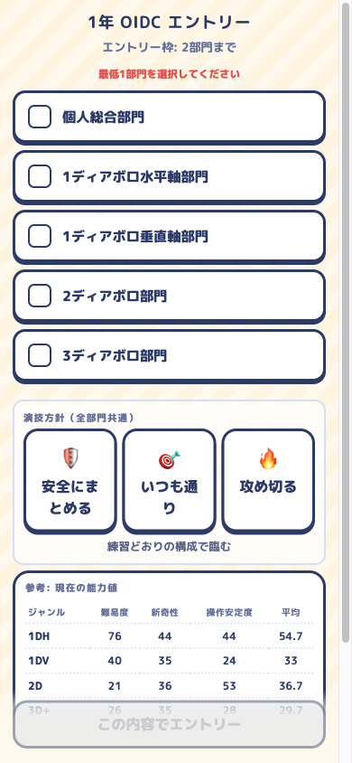
演技方針ボックスは y=444〜627、固定ボタンは y=776 → 隠れずに全部見える（改修前は画面外＋ボタンの背後）。原因だった #entry-divisions { margin-top:auto }（部門を画面下へ押し下げていた）を解除。
方針ボタンの文言が「安全にま／とめる」と折り返す（改修前から）。Wave 2 の D2（部門ボタンに自分の値）と一緒に、ラベルを「安全／通常／攻め」の2文字＋補足に整理する。
技術見出し行が行全体でタップ対象（340×40px、改修前はピル23px）。ポイントチップ34px。月送りは全面タップで1msで次へ（「タップで進む」の案内つき・二重実行なし）。mobile-web-app-capable 併記。
テスト269件通過（今回6件追加）。詳細は docs/plans/2026-08-29-ux-wave1-spec.md の検証記録。
核となる体験（練習→成長→大会→カード）は成立していて、演出・アバター・順位発表・パック開封は既に「ゲームらしい」。 いま足を引っ張っているのは見た目の新しさではなく、①毎ターンの摩擦（タップ数・隠れた選択肢）、②読めない文字と押しにくい小さなUI、③「前より良くなった」が見えない（周回ゲームなのに前回比が無い）の3つ。
同じ能力値の表が4画面に再掲される一方で、本当に判断に要る情報（この部門はあなたの何点か／この練習で何が何点伸びるか／前回と比べてどうか）が出ていない。情報を減らして、判断に効く数字に置き換えるのが今回の方向です。
| # | 指摘 | 重さ | 手間 | Wave |
|---|---|---|---|---|
| 1 | 練習3枠を埋めるのに6タップ。ジャンルを保持すれば3タップ、「前回と同じ」なら1タップ | 高 | 小 | 1 |
| 2 | 大会エントリーの「演技方針」が画面外＋固定ボタンの背後で、存在に気づけない | 高 | 小 | 1 |
| 3 | 9〜11pxの文字が多い／「技術グリッド詳細」等のタップ高さ23px | 高 | 中 | 1→2 |
| 4 | 順位・成長に「前回比」が無い（周回の報酬が見えない） | 高 | 中 | 3 |
| 5 | ホームの小レーダー4つが情報になっていない → バー4本＋前月比へ | 中 | 中 | 2 |
| 6 | 部門名と能力の対応が読めない（「1ディアボロ水平軸部門」＝1DH と分からない） | 中 | 小 | 2 |
| 7 | NPCイベントの発生率12.5%。作った顔が1周に1〜2回しか出ない | 中 | 小 | 3 |
| 8 | タイトルの説明文の壁／スカウト画面で意味の分からない数値表が先に来る | 中 | 中 | 4 |
| 9 | 図鑑が「???」×50から始まり、次の1枚の目標が無い | 中 | 中 | 3 |
| 10 | 絵文字がUIアイコンを兼ねていてトーンが揃わない | 低 | 大 | 4 |
| 11 | 月送り1.5秒×24回にスキップが無い | 低 | 小 | 1 |
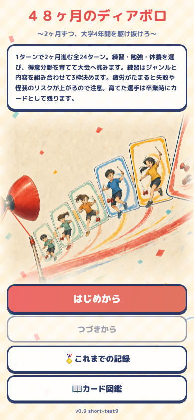
説明文は115字・12.5px、高さ133px。絵（349px）の直上に置かれ、ボタンの前に読ませる構成。
プレイ前に読んでも実感が無く、大半は読み飛ばす。読む人にとっても「疲労」「枠」「カード」など未体験の語が並ぶ。
説明文を消し、絵を主役にする。ルールは初回のホームで「まず練習を選んでみよう」→練習画面で「ジャンル→内容の順」→結果画面で「大成功で伸びが2倍」と、その画面でその1行だけ出す（2周目からは出さない）。
タイトルが「遊びたくなる絵」になり、ルールは触りながら覚える。
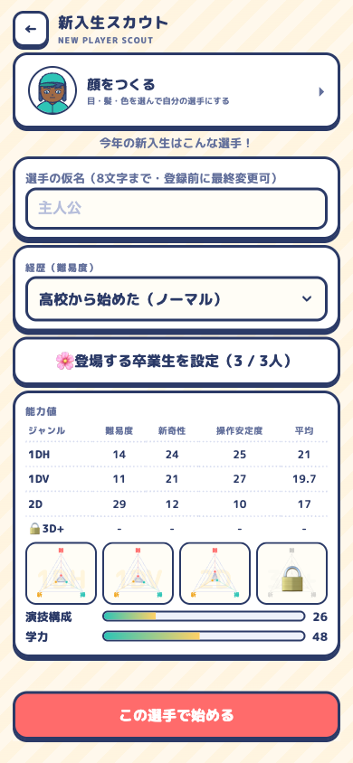
顔・名前・経歴のあとに、能力値12マス＋レーダー4つ＋ゲージ2本。引き直しボタンは非表示なので、この数値は見るだけで選べない。
選べない数値を詳しく見せても判断材料にならない。新規プレイヤーには「難易度／新奇性／操作安定度」の区別がまだ無い。
表を1行の要約に畳む（例:「得意: 1DH ／ 平均 27 ／ 学力 41」）。詳細はタップで開く。画面の主役を「顔をつくる」と名前にする。
スカウト画面が「自分の選手を作る場所」として読める。
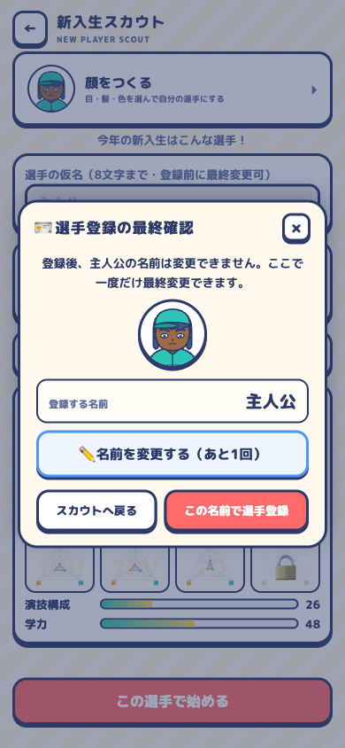
先頭の文が「登録後、主人公の名前は変更できません。」
顔と名前を確かめる嬉しい場面が、注意書きから始まって固くなる。
顔を大きく（78→110px）、名前を主役に、「この選手で4年間を駆け抜ける？」の一言。注意書きは名前変更ボタンの下へ小さく。
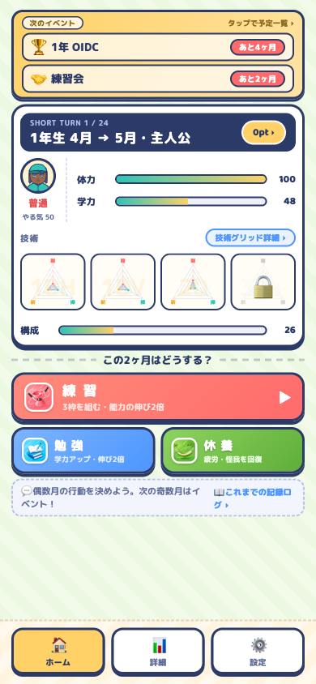
実測: TURN表示 9.3px／「技術グリッド詳細」9.9px／行動ボタンの説明 10.2px／ボトムナビの文字 10.2px／盤面ラベル 10.6px／ログ帯 10.9px／予定一覧の日付・補足 9.3px／図鑑のカード名 9.9px／練習内容の補足 8.8px。
iOSで実用的な最小は11pt前後。装飾ラベルなら許容だが、「何が起きるか」を伝える説明文（行動の説明・練習内容の補足）がこの大きさなのは判断に響く。ホームを1画面に収めるために縮めた結果。
最小11px・説明文12pxを下限にし、そのぶん情報を減らす（B3のレーダー置き換えで高さが空く）。ボトムナビは文字を消してアイコンだけ＋aria-labelでもよい（多言語方針とも一致）。
読めるようになる。減らした情報は詳細画面に残るので失うものはない。
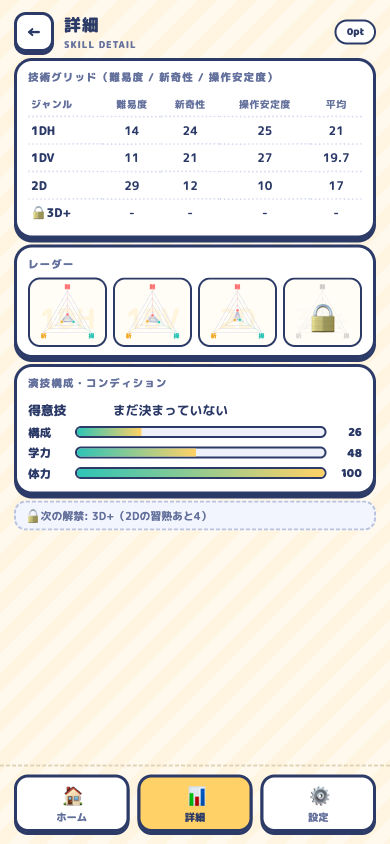
「技術グリッド詳細 ▸」の高さ23px。同種の「pt ▸」「記録ログ ▸」も同程度。行動ボタン（58〜61px）とナビ（58px）は十分。
押せる見た目（ピル）なのに指では狙いにくく、押し損ねが「反応しない」に見える。
ピルを大きくするのではなく、行全体（「技術」見出し行／ポイントの帯／ログ帯）をタップ対象にする。高さは自然に40px以上になる。ピルは「押せる印」として残す。
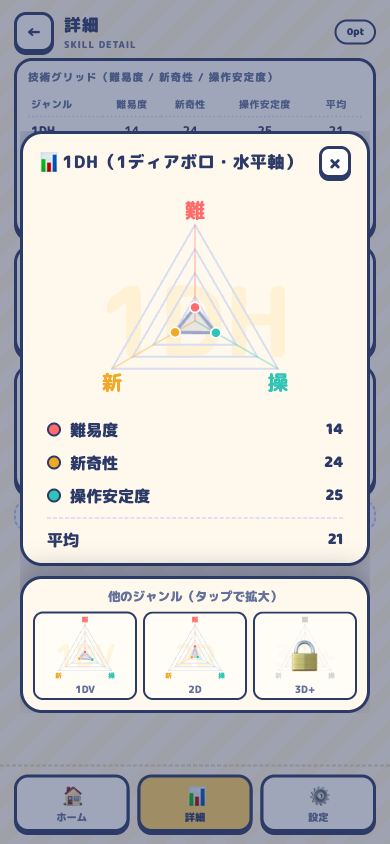
ホームのレーダーは1つ79×69px。3軸の三角形で、値14／24／25の差が図では読めない（拡大モーダルでは読める）。
ホームで本当に要るのは「どのジャンルが伸びていて、次に何を鍛えるか」。三角の形より、ジャンル別の平均値と前月比のほうが判断に直結する。レーダーは「形で個性を見る」用途で、詳細画面に置くのが合う。
ホームの技術欄を 1DH ████████ 27 ▲6 のようなバー4本に置き換える（既存のゲージ部品で作れる）。前月比は今月の練習で伸びた分。未解禁は鍵付きバー。レーダーは詳細画面とタップ拡大に残す。
練習の成果がホームに「▲6」として残り、C4（成果と成長の接続）にもつながる。高さも減る（B1の余白に回せる）。
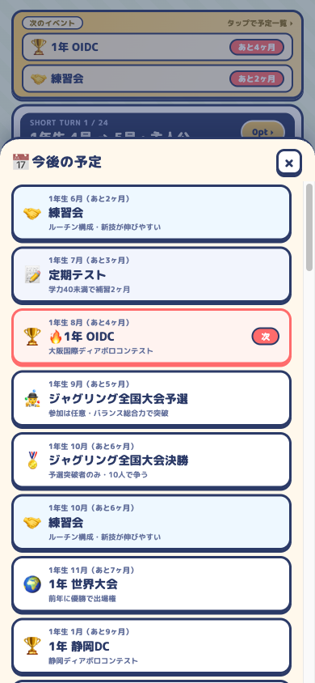
ホーム下部のログ帯は「💬 偶数月の行動を決めよう。次の奇数月はイベント！」で、ターンが進んでも変わらない（大会後など一部の月のみ差し替わる）。
毎回同じ文は読まれなくなる。ここは「前回何が起きたか」を1行で積む場所にすると、ループの手応えが残る。
「先月: 1DH×難易度 +6・大成功1／野中コーチと話した」のように直前の結果の要約を出す。「▸ 記録ログ」はそのまま。初回だけ現行の案内文。
なお「今後の予定」一覧（右）は44行あり、先が見えるのは良い。ただし日付・補足が9.3px。
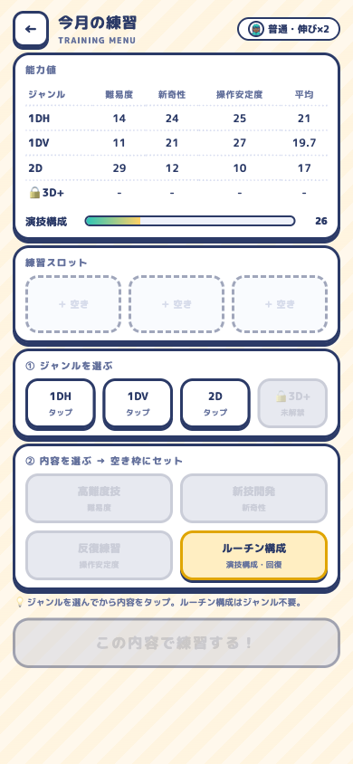
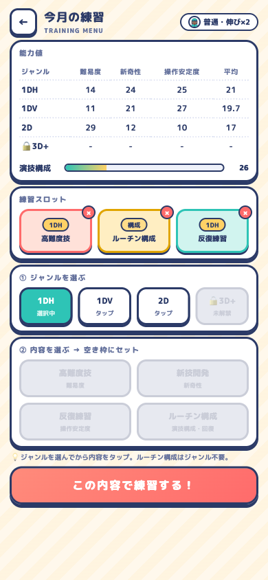
枠1つにつき「①ジャンル→②内容」の2タップで、3枠=6タップ＋GO。同じジャンルを続けて選んでも毎回ジャンルから。24ターン×6=144タップ/周。
周回ゲームで最も繰り返す操作。ジャンル選択はほとんど「前と同じ」なので、毎回選ばせる必然性が無い。
①ジャンルを選択中のまま保持し、内容タップだけで次の空き枠に入る（3枠=3〜4タップ）。②「前回と同じ3枠」ボタンを追加（1タップ）。③枠をタップで外す×は残す。
1周あたり最大約100タップ減。2周目以降の「作業感」がいちばん減る改善。
練習メニュー上部に能力値の表（ホーム・詳細・エントリーと合わせて4画面目）。内容ボタンは「高難度技／難易度」と項目名を2度書いているだけで、補足は8.8px。
ここで知りたいのは「この内容を入れると何が何点伸びそうか」。表は答えていない。
表を消し、内容ボタンに見込みを出す（例:「高難度技 難易度 +4〜8」。数値は engine の tier 確率から算出可能）。選んだジャンルの現在値だけを1行で（「1DH: 難30 新34 操41」）。
練習画面が「表を眺める」から「伸ばす場所を選ぶ」に変わる。高さも減る。
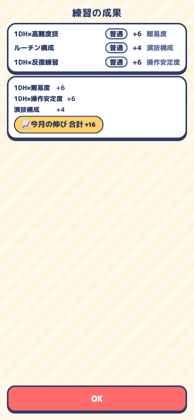
まとめカードの下に565pxの空白（画面844px）。演出（ハンコ・カウントアップ・合計ピル）は入っている。
空白を埋める必要はないが、「練習→能力に反映」の因果がこの画面で切れている。伸びた数字がどこへ行ったかは、ホームに戻って探すことになる。
まとめカードの下に、伸びたジャンルのバーだけを出して「27 → 33」と伸びる（B3のバー部品を流用）。空白を埋めるためではなく、成果と成長をつなぐ場所として使う。
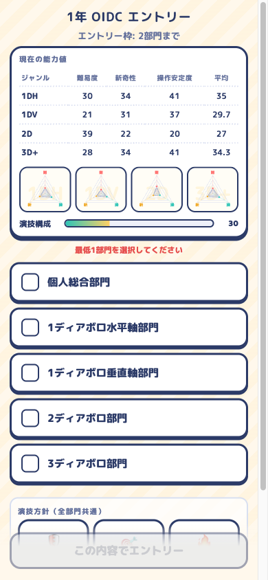
部門5つの下に「演技方針（全部門共通）」の3択があるが、初期表示では折り返しの下にあり、固定CTA「この内容でエントリー」に上端が隠れている（右図の下端）。
安全／通常／攻めは戦略の要素なのに、存在に気づかないまま「いつも通り」で出場し続ける。作った機能が使われない。
方針を部門選択の上（能力表の位置）へ移す。部門を1つ以上選ぶまでは方針を薄く表示。能力表はD2の形に畳む。
選択が見える。エントリー画面が「部門＋方針」の2つの判断として読める。
部門は「1ディアボロ水平軸部門」、表は「1DH」。同じものだと初見で結びつかない。総合部門が4ジャンル平均であることも表からは分からない。
部門ボタンの右にその部門で使われる自分の値を出す（「1ディアボロ水平軸部門 あなた: 35」「個人総合 あなた: 31（4ジャンル平均）」）。表は消せる。
「どこに出れば勝負になるか」が部門ボタンだけで判断できる。
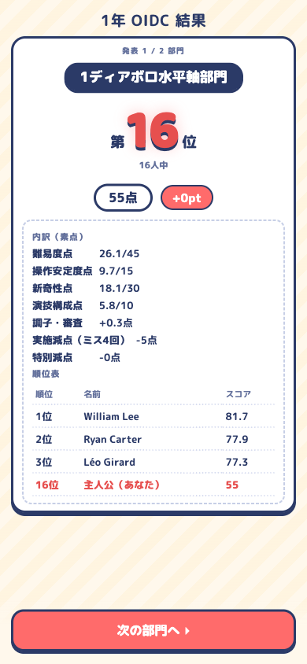
順位・人数・点・pt・内訳・順位表は出るが、同じ大会の前回順位／自己ベストは出ない。データ（state.results）にはある。
周回・年次のゲームで「前より良くなった」がいちばんの報酬なのに、それを計算するのがプレイヤー任せ。16位でも「前回20位→▲4」なら前向きに受け取れる。
順位の下に「前回 20位 → ▲4」または「初出場」。自己ベスト更新なら小さな紙吹雪。卒業画面の成績表にも前年比の列。
負けた大会にも意味が生まれる。順位発表の演出（既に良い）が報酬として完成する。
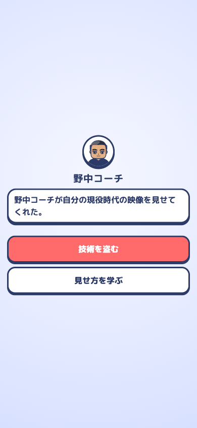
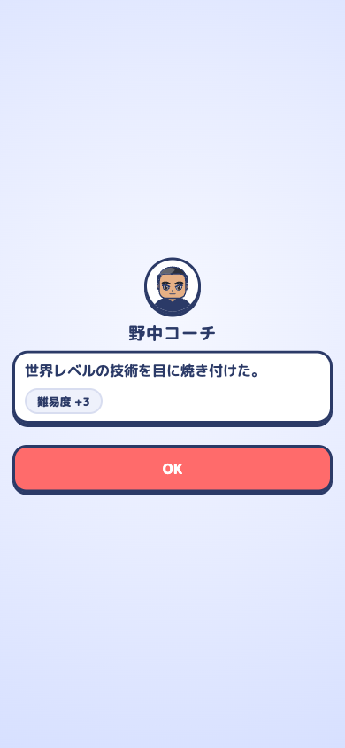
顔64px＋名前＋本文カード＋選択肢が中央に集まり、上下は無地のグラデーション。
顔が入って「誰と話しているか」は分かるようになった。次は「どこで」。部活の一場面として、床の線・窓の光程度の薄い背景があるだけで場面になる。
顔を96pxに、背景に体育館／部室／会場の3種の薄い舞台（SVGの線画で軽く）。話者によって切替。
キャラクターイベント12種、発生率12.5%／奇数月。1周12回の奇数月で期待値1.5回。今回のレビューでも自然には出ず、確率を1に上げて撮影した。
NPC10人の顔を作った効果が、1周に1〜2回では出ない。奇数月の「できごと」（10種、話者なし）も、NPCの口を借りれば顔が出せる。
奇数月は必ず誰かが話しかける形にする（発生率を上げるか、quietイベントに話者を割り当てる）。同じ人が続かないよう直近3回の話者を避ける。
部の仲間が「いる」実感。イベント本文（平均31字）は短いので、頻度を上げてもテンポは落ちない。
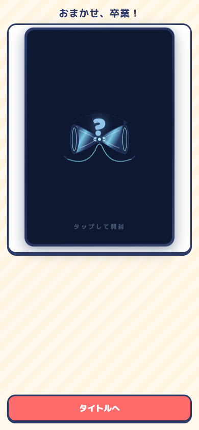
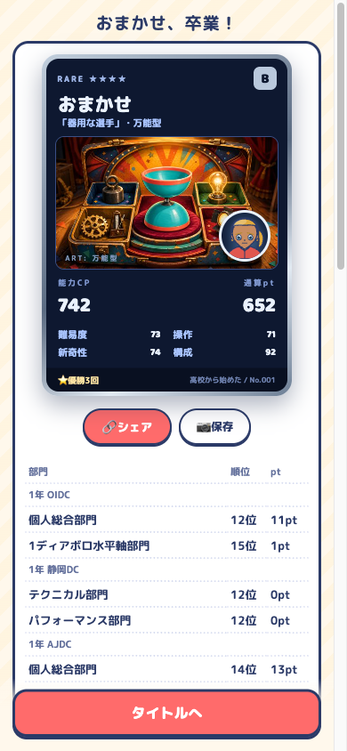
パック開封→カードは良い。その下に成績表61行が続き、スクロールして「タイトルへ」。
周回の締めとして先に欲しいのは「今回のハイライト3つ」と「前回との比較」。全戦績は折りたたみでよい。
カードの下に「ハイライト」（最高順位／伸びが最大だったジャンル／前回比）を3行。成績表は「全戦績を見る ▸」で開く。
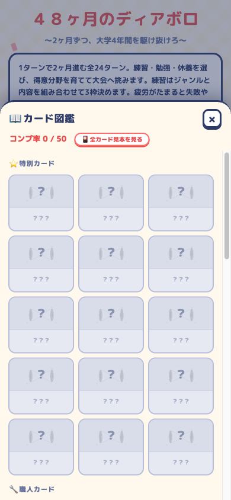
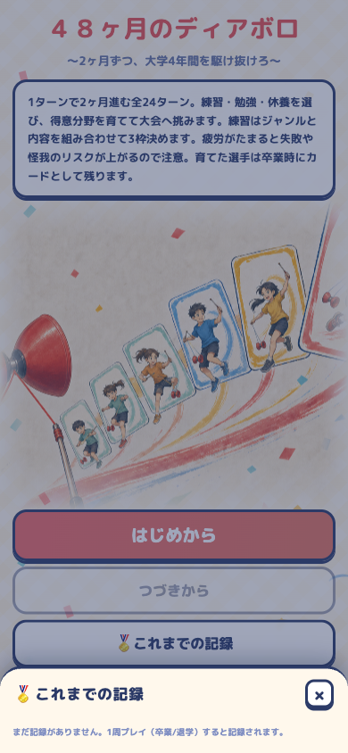
初回の図鑑は50枚すべて「???」（コンプ率0/50）。記録は「まだ記録がありません」の1行。
50枚は初周のプレイヤーには遠すぎて目標にならない。「次の1枚」が見えると周回の理由ができる。
図鑑の先頭に「次に狙えるカード」を1枚だけ条件付きで見せる（例:「Bランクで卒業 →『器用な選手』」。条件は cards.js の判定から出せる）。記録の空状態にも「1周目の目標: 1年OIDCで10位以内」など1つ。
周回に「次はこれ」ができる。図鑑が眺める場所から目標の場所になる。
apple-mobile-web-app-capable が非推奨警告。mobile-web-app-capable を併記する（1行）。挙動を変えない小改修。Codexに1回で投げられる。
情報設計の変更。トークンシートを更新してから実装。
「前より良くなった」を全画面で見せる。
見た目に関わるので方向を確認してから。
測ったこと: 390×844（iPhone 14/15相当）で新規プレイ→キャラメイク→練習→イベント→大会→卒業→図鑑を一周。各画面の文字サイズ・要素の高さ・スクロールの有無・タップ数を DOM から実測。撮影20枚は shots/。
測っていないこと: 実機（iPhone Safari／PWAスタンドアロン）での見え方、音、長期プレイのバランス、複数人のテストプレイでの反応。「読めない」「気づかない」は実測値と一般的な基準（iOS HIG の最小タップ44pt・実用文字11pt前後）からの推定で、テスターの声で裏を取るのが望ましい。
解釈の前提: 対象プレイヤーはディアボロ経験者で、スマホで隙間時間に周回する。1周目の分かりやすさより2周目以降の摩擦を重く見ている。
関連: 設計方針は design/TOKEN_SHEET.md、アバターは docs/plans/2026-08-28-avatar-system-plan.md、演出は docs/plans/2026-08-28-game-feel-plan.md。